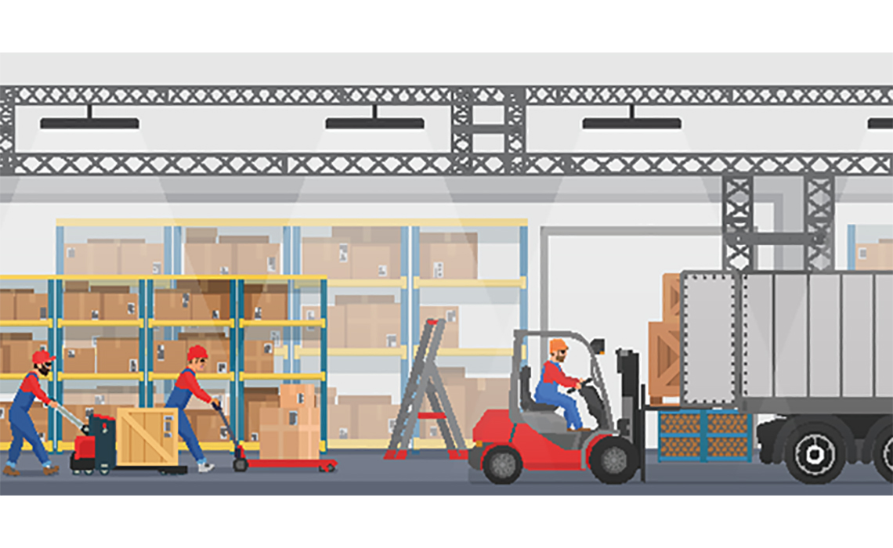

專題背景知識介紹
本研究的主要目的是想藉由物聯網系統結合手機的應用，發明一款主要功能為幫助在賣場的貨艙揀選貨品的撿貨員們可以更便利於撿貨的手機應用程式。藉由此應用程式，可以達成減少新進人員的教學成本，省下更多時間以及人力資源。除此之外，本研究之手機應用程式也包含後端數據及小型資料庫，以此為基礎，甚至可以結合數據來判斷出哪些產品什麼時期熱銷冷門，進而去做提前的補貨調度。
從商業角度來看，時間成本對於公司而言可說是一分一秒都非常珍貴；Stalk &Hout(1990)探討了時間與成本的關係，認為在大多數組織內部，時間越少則花費的成本也越少。楊穎等(2004)認為時間成本屬於企業的一項費用支出，是指由於企業生產、管理過程中非必要時間浪費而引起的價值損失。(2005,胡蓓、陳建安)認為時間成本是一種由於非必要時間浪費而引起的機會成本或損失。為了減少企業的時間成本以及人力資源下，必須引進機械和電子化的設備來減少人力成本，不過由於導入電子化採購，其投入的成本及回收效益不明確，在推行的過程中，可能還有許多不可預知的風險(2000,林佳宏)。因此，為了降低企業的成本，我們將設計成本極低卻可以提供最佳化的技術，使企業可以透過減低設備的成本，讓公司利益最大化。